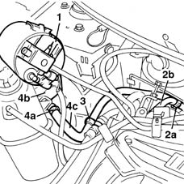
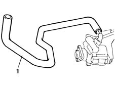

4130B35 supply pipe from fluid resevior to power steering pump r r for right hand drive versions
- Path
- Procedures > 41 STEERING > 4130 POWER ASSISTED STEERING > 4130B power steering hydraulic sytem > 4130B35 supply pipe from fluid resevior to power steering pump r r for right hand drive versions
- Kind
- repair procedure (removal / refitting; the operation number is the code)
- Applies to
- all engines; all production periods
- Interactive page
- https://sloeber94.github.io/elrnDB-fMltpl/en/#/2891696
Applies to: engines: 1.6 16v; all production periods; only with equipment: Right hand drive
 Removing
Removing
 Refitting
RefittingDrain the fluid from the power assisted steering fluid reservoir using a syringe.
Position a container underneath the vehicle
1. Release the active charcoal filter from the mounting bracket and move it aside.
2. Open the band (2a) and disconnect the pipe between the reservoir and the pump from the pump (2b).
3. Release the pipe from the retaining band on the bodyshell.
4. Open the band (4a) fastening the pipe to the reservoir (4b) and remove the pipe (4c).

Applies to: engines: 1.6 16v; all production periods; only with equipment: Right hand drive
Refitting
RemovingPosition the pipe and close the reservoir side retaining band.
Secure the pipe to the retaining band on the bodyshell.
Close the pump side retaining band.
Reposition the active charcoal filter.
4130B14 Power assisted steering fluid reservoir CAP - R.R. - Check level and top up if necessary. .
Applies to: engines: 1.9 JTD 8V; all production periods; only with equipment: Right hand drive
Removing
Refitting1016A10 sound-proofing cover - r + r
1008C10 power unit upper reaction link r r
1008C16 body link bracket - r r
1044B10 fuel filter assembly - r + r or replace
4450B10 Front WHEEL (one) - R.R.
7055B42 Additional FRONT WHEEL ARCH (one), left or right - R.R.
7055B54 under-engine guard - r r
1092G10 single engine belt r r
1092C14 power steering pump/self levelling suspension pump pulley - r + r with belt removed
4130B21 power steering pump r r with interfering parts removed
1. Open the pump side retaining band for the pipe between the reservoir and the power assisted steering pump and remove the pipe.

Applies to: engines: 1.9 JTD 8V; all production periods; only with equipment: Right hand drive
Refitting
RemovingSecure the pump end of the pipe between the reservoir and the power assisted steering pump using a band.
4130B21 power steering pump r r with interfering parts removed
1092C14 power steering pump/self levelling suspension pump pulley - r + r with belt removed
1092G10 single engine belt r r
7055B54 under-engine guard - r r
7055B42 Additional FRONT WHEEL ARCH (one), left or right - R.R.
4450B10 Front WHEEL (one) - R.R.
1044B10 fuel filter assembly - r + r or replace
1008C16 body link bracket - r r
Topics linked from this page (11)
- 1008C10 power unit upper reaction link r r
- 1008C16 body link bracket - r r
- 1016A10 sound-proofing cover - r + r
- 1044B10 fuel filter assembly - r + r or replace
- 1092C14 power steering pump/self levelling suspension pump pulley - r + r with belt removed
- 1092G10 single engine belt r r
- 4130B14 Power assisted steering fluid reservoir CAP - R.R. - Check level and top up if necessary.
- 4130B21 power steering pump r r with interfering parts removed
- 4450B10 Front WHEEL (one) - R.R.
- 7055B42 Additional FRONT WHEEL ARCH (one), left or right - R.R.
- 7055B54 under-engine guard - r r